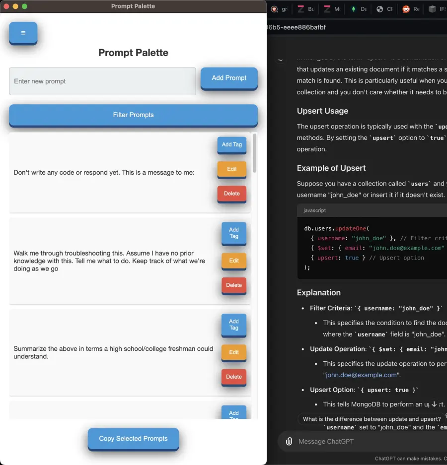
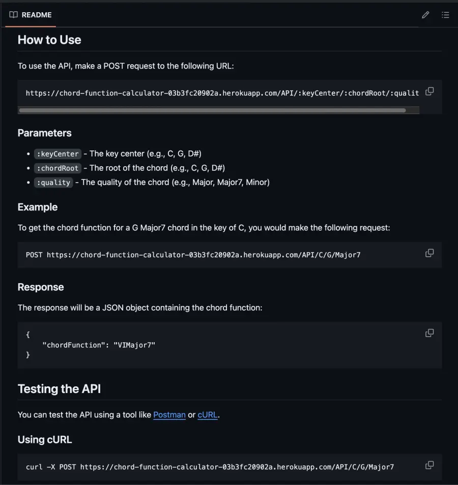
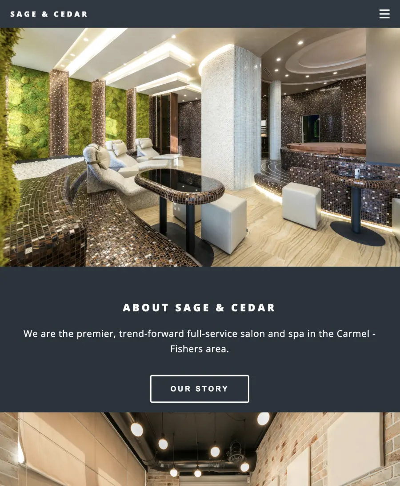
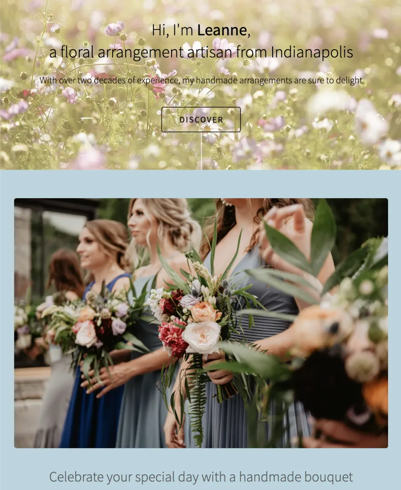

Work
Recent software and creative web projects.
A mix of open-source builds and client-focused experiences with practical outcomes.

Chord Function API
Problem: harmonic analysis is hard to automate.
Outcome: queryable harmonic-function API.
Visit Repo
Sage & Cedar
Problem: needed a modern digital presence.
Outcome: responsive site with stronger trust signals.
Visit Site
Flowers by Leanne
Problem: a local business needed a simple web home.
Outcome: lightweight site focused on clarity.
Visit Site